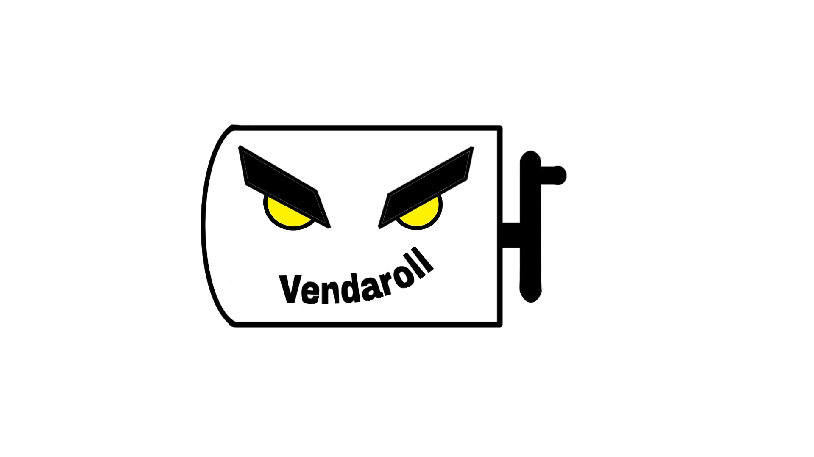

Vendaroll

Que es Vendaroll?
Es la solución definitiva para enrollar vendas deportivas de manera rápida, eficiente y organizada. Diseñado especialmente para deportistas, este innovador dispositivo permite enrollar cualquier tipo de venda en segundos, manteniéndolas en perfectas condiciones y listas para el próximo uso. Compatible con diversos tamaños y materiales, Vendaroll ahorra tiempo y reduce el desgaste de las vendas.
Además, Vendaroll también ofrece una gama de vendas deportivas de alta calidad para distintas actividades y necesidades, brindando una solución integral para el cuidado y manejo de las vendas.
Usos
Entrenamientos y Competencias Deportivas: Ideal para atletas que utilizan vendas en sus rutinas, como boxeadores, luchadores, gimnastas y levantadores de pesas, futbolistas,etc; Vendaroll permite enrollar rápidamente las vendas después de cada sesión.
Rehabilitación y Terapia Física: Útil en entornos de fisioterapia y rehabilitación, donde las vendas se usan frecuentemente para inmovilizar o brindar soporte, facilita el manejo y cuidado de las vendas de soporte y compresión.
Uso Cotidiano: Para personas que entrenan en casa y buscan mantener sus vendas deportivas organizadas, y en buen estado después de ser usadas y limpias.
Tiendas de Equipamiento Deportivo: Como un complemento ideal en la venta de vendas deportivas, Vendaroll ofrece una solución de almacenaje y cuidado que mejora la experiencia del usuario.
Gimnasios y Centros Deportivos: Los gimnasios centros de deportivos, podrán tener a disposición de sus atletas un enrolla vendas para así puedan mantener ordenadas y cuidadas su vendas para sus respectivas secciones.
Ejemplos

Mas imformacion
En Para que sirven las vendas deportivas ?
.